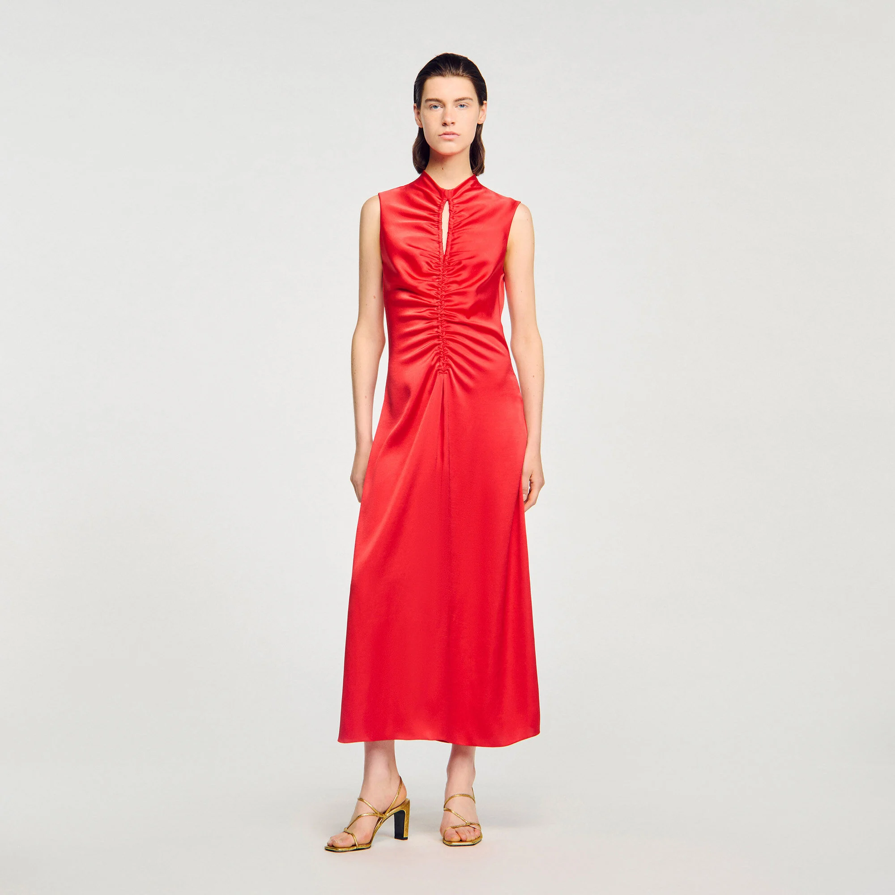
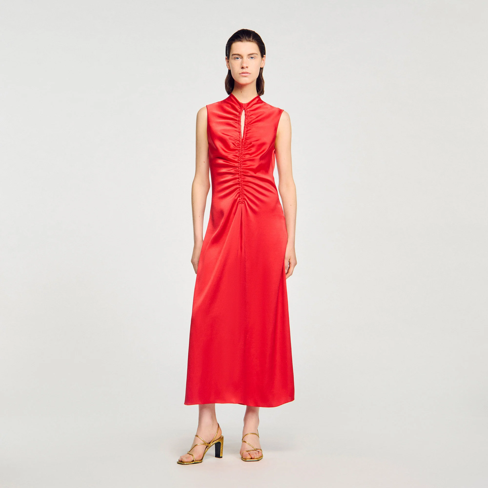

Matière / composition
La matière première est une fibre synthétique, très probablement polyester.
Les indices concordants sont l’aspect très lisse et brillant, la finesse régulière du tissu et l’usage typique en doublure.
Fil
Le fil est un fil continu multifilament, composé de polyester.
Lorsqu’on défait le fil, on observe plusieurs filaments très fins, ce qui exclut une fibre courte naturelle (coton, laine).
Le fil est légèrement retors, juste ce qu’il faut pour assurer la cohésion, tout en conservant une surface très lisse favorisant la brillance.
Construction textile
Il s’agit d’un textile chaîne et trame.
Armure
Le tissu est réalisé en armure satin.
Ennoblissement couleur
Le tissu a subi une teinture en pièce de couleur rouge vif, après tissage.
Ennoblissement d’apprêt
Plusieurs apprêts sont très probables :
- Apprêt de glissance (silicone ou résine légère) pour faciliter l’enfilage
- Apprêt antistatique, courant sur les doublures synthétiques
- Calandrage, qui accentue la brillance et la planéité du tissu
Ces traitements expliquent le toucher très lisse et le tombé fluide.
Contexture (chaîne et trame)
Contexture fine, serrée et régulière, conférant au tissu une surface lisse, brillante et un tombé fluide.
Poids
Poids estimé : environ 60 à 90 g/m²
Produit fini
Robe longue en satin rouge, Sandro
Collection : Été 2022
Composition : 100% polyester
Prix de vente : 265€
Voir produit
 
